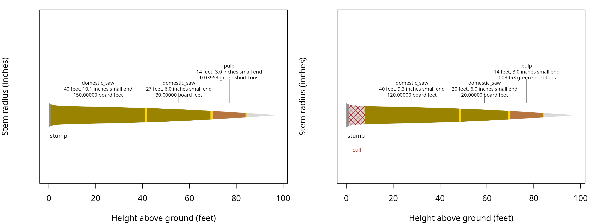

Recording defect
Source:vignettes/defect-recording-conventions.Rmd
defect-recording-conventions.RmdProduct order in products() sets cutting priority.
Located defect records change available stem sections and product
eligibility.
## Define export specifications
export <- product(product = 'export', ## product name, unitless
spcd = c(202, 263), ## species codes, unitless
min_dbh = 12, ## inches
min_length = 32, ## feet
max_length = 40, ## feet
trim = 1, ## feet
min_sed = 12, ## inches
inside_bark = TRUE, ## logical, unitless
volume_unit = 'scribner', ## board feet
split_scale = FALSE) ## logical, unitless
## Define domestic saw specifications
domestic_saw <- product(product = 'domestic_saw', ## product name, unitless
spcd = c(202, 263), ## species codes, unitless
min_dbh = 10, ## inches
min_length = 16, ## feet
max_length = 40, ## feet
trim = 1, ## feet
min_sed = 6, ## inches
inside_bark = TRUE, ## logical, unitless
volume_unit = 'scribner', ## board feet
split_scale = FALSE) ## logical, unitless
## Define pulp specifications
pulp <- product(product = 'pulp', ## product name, unitless
spcd = c(202, 263), ## species codes, unitless
min_dbh = 5, ## inches
min_length = 8, ## feet
max_length = 40, ## feet
trim = 0.5, ## feet
min_sed = 3, ## inches
inside_bark = TRUE, ## logical, unitless
volume_unit = 'green_ton') ## green short tons
## Combine products in cutting priority order
specifications <- products(export = export,
domestic_saw = domestic_saw,
pulp = pulp)Effects
cull removes an interval. restrict allows
only its named product within an interval. Both split the stem and
restart priority.
## Record a cull on an example tree
defect(tree_id = example_trees_pnw$tree[7],
from = 1,
to = 8,
effect = 'cull') %>%
rename(`from (feet)` = from,
`to (feet)` = to,
`percent (percent)` = percent)
#> <merch_defects> 1 records
#> tree_id from (feet) to (feet) effect product percent (percent)
#> 7 1 8 cull <NA> NA
## Record a product restriction
defect(tree_id = example_trees_pnw$tree[28],
from = 35,
to = NA,
effect = 'restrict',
product = 'pulp') %>%
rename(`from (feet)` = from,
`to (feet)` = to,
`percent (percent)` = percent)
#> <merch_defects> 1 records
#> tree_id from (feet) to (feet) effect product percent (percent)
#> 28 35 NA restrict pulp NAend stops cutting at from.
sweep rejects overlapping logs only when its percentage
exceeds the product’s max_sweep.
## Record an end
defect(tree_id = example_trees_pnw$tree[21],
from = 88,
to = NA,
effect = 'end') %>%
rename(`from (feet)` = from,
`to (feet)` = to,
`percent (percent)` = percent)
#> <merch_defects> 1 records
#> tree_id from (feet) to (feet) effect product percent (percent)
#> 21 88 NA end <NA> NA
## Record sweep severity
defect(tree_id = example_trees_pnw$tree[35],
from = 28,
to = 70,
effect = 'sweep',
percent = 25) %>%
rename(`from (feet)` = from,
`to (feet)` = to,
`percent (percent)` = percent)
#> <merch_defects> 1 records
#> tree_id from (feet) to (feet) effect product percent (percent)
#> 35 28 70 sweep <NA> 25Missing to extends the record to the tree top. No defect
percentage is applied within merchandise().
Mapped defects
## Check the shipped defect records
checked <- validate_defects(x = example_defects_pnw,
products = specifications,
ht = example_trees_pnw$ht,
tree_id = example_trees_pnw$tree)| tree_id | from (feet) | to (feet) | effect | product | percent (%) | status |
|---|---|---|---|---|---|---|
| 7 | 1 | 8 | cull | NA | NA | 0 |
| 14 | 12 | 15 | cull | NA | NA | 0 |
| 21 | 88 | NA | end | NA | NA | 0 |
| 28 | 35 | NA | restrict | pulp | NA | 0 |
| 35 | 28 | 70 | sweep | NA | 25 | 0 |
| 42 | 1 | 8 | cull | NA | NA | 0 |
## Select the tree with the first shipped cull
trees <- example_trees_pnw %>%
filter(tree == first(x = example_defects_pnw$tree_id))
## Select its mapped defects
records <- example_defects_pnw %>%
filter(tree_id %in% trees$tree)
## Cut and scale the trees
clean <- merchandise(tree_id = trees$tree,
dbh = trees$dbh,
ht = trees$ht,
spcd = trees$spcd,
products = specifications)
## Cut and scale the trees
affected <- merchandise(tree_id = trees$tree,
dbh = trees$dbh,
ht = trees$ht,
spcd = trees$spcd,
products = specifications,
defects = records)| run | tree_id | log | product | start height (feet) | end height (feet) | length (feet) | small end diameter (inches) | scale (Scribner board feet) |
|---|---|---|---|---|---|---|---|---|
| clean | 7 | 1 | domestic_saw | 1 | 42 | 40 | 10.106 | 150 |
| clean | 7 | 2 | domestic_saw | 42 | 70 | 27 | 6.019 | 30 |
| affected | 7 | 1 | domestic_saw | 8 | 49 | 40 | 9.315 | 120 |
| affected | 7 | 2 | domestic_saw | 49 | 70 | 20 | 6.019 | 20 |
| run | tree_id | log | product | start height (feet) | end height (feet) | length (feet) | small end diameter (inches) | scale (green short tons) |
|---|---|---|---|---|---|---|---|---|
| clean | 7 | 3 | pulp | 70 | 84.5 | 14 | 3.017 | 0.04 |
| affected | 7 | 3 | pulp | 70 | 84.5 | 14 | 3.017 | 0.04 |
Drawing measurements
| tree_id | height (feet) | radius inside bark (inches) |
|---|---|---|
| 7 | 0.0 | 8.8198 |
| 7 | 0.5 | 8.1238 |
| 7 | 1.0 | 7.7100 |
| 7 | 1.5 | 7.4290 |
| 7 | 2.0 | 7.2244 |
| 7 | 2.5 | 7.0691 |
| 7 | 3.0 | 6.9475 |
| 7 | 3.5 | 6.8503 |
| 7 | 4.0 | 6.7712 |
| 7 | 4.5 | 6.7059 |
| 7 | 5.0 | 6.6512 |
| 7 | 5.5 | 6.6049 |
| 7 | 6.0 | 6.5651 |
| 7 | 6.5 | 6.5304 |
| 7 | 7.0 | 6.4999 |
| 7 | 7.5 | 6.4725 |
| 7 | 8.0 | 6.4477 |
| 7 | 8.5 | 6.4247 |
| 7 | 9.0 | 6.4032 |
| 7 | 9.5 | 6.3826 |
| 7 | 10.0 | 6.3628 |
| 7 | 10.5 | 6.3434 |
| 7 | 11.0 | 6.3241 |
| 7 | 11.5 | 6.3048 |
| 7 | 12.0 | 6.2855 |
| 7 | 12.5 | 6.2662 |
| 7 | 13.0 | 6.2469 |
| 7 | 13.5 | 6.2277 |
| 7 | 14.0 | 6.2084 |
| 7 | 14.5 | 6.1891 |
| 7 | 15.0 | 6.1698 |
| 7 | 15.5 | 6.1505 |
| 7 | 16.0 | 6.1313 |
| 7 | 16.5 | 6.1120 |
| 7 | 17.0 | 6.0927 |
| 7 | 17.5 | 6.0734 |
| 7 | 18.0 | 6.0542 |
| 7 | 18.5 | 6.0349 |
| 7 | 19.0 | 6.0156 |
| 7 | 19.5 | 5.9963 |
| 7 | 20.0 | 5.9770 |
| 7 | 20.5 | 5.9578 |
| 7 | 21.0 | 5.9385 |
| 7 | 21.5 | 5.9192 |
| 7 | 22.0 | 5.8999 |
| 7 | 22.5 | 5.8806 |
| 7 | 23.0 | 5.8614 |
| 7 | 23.5 | 5.8421 |
| 7 | 24.0 | 5.8228 |
| 7 | 24.5 | 5.8035 |
| 7 | 25.0 | 5.7842 |
| 7 | 25.5 | 5.7650 |
| 7 | 26.0 | 5.7457 |
| 7 | 26.5 | 5.7264 |
| 7 | 27.0 | 5.7071 |
| 7 | 27.5 | 5.6878 |
| 7 | 28.0 | 5.6684 |
| 7 | 28.5 | 5.6489 |
| 7 | 29.0 | 5.6294 |
| 7 | 29.5 | 5.6098 |
| 7 | 30.0 | 5.5900 |
| 7 | 30.5 | 5.5701 |
| 7 | 31.0 | 5.5501 |
| 7 | 31.5 | 5.5300 |
| 7 | 32.0 | 5.5096 |
| 7 | 32.5 | 5.4891 |
| 7 | 33.0 | 5.4684 |
| 7 | 33.5 | 5.4475 |
| 7 | 34.0 | 5.4264 |
| 7 | 34.5 | 5.4051 |
| 7 | 35.0 | 5.3835 |
| 7 | 35.5 | 5.3617 |
| 7 | 36.0 | 5.3397 |
| 7 | 36.5 | 5.3174 |
| 7 | 37.0 | 5.2948 |
| 7 | 37.5 | 5.2720 |
| 7 | 38.0 | 5.2489 |
| 7 | 38.5 | 5.2254 |
| 7 | 39.0 | 5.2018 |
| 7 | 39.5 | 5.1778 |
| 7 | 40.0 | 5.1535 |
| 7 | 40.5 | 5.1288 |
| 7 | 41.0 | 5.1039 |
| 7 | 41.5 | 5.0786 |
| 7 | 42.0 | 5.0531 |
| 7 | 42.5 | 5.0271 |
| 7 | 43.0 | 5.0009 |
| 7 | 43.5 | 4.9742 |
| 7 | 44.0 | 4.9473 |
| 7 | 44.5 | 4.9199 |
| 7 | 45.0 | 4.8923 |
| 7 | 45.5 | 4.8642 |
| 7 | 46.0 | 4.8358 |
| 7 | 46.5 | 4.8070 |
| 7 | 47.0 | 4.7779 |
| 7 | 47.5 | 4.7483 |
| 7 | 48.0 | 4.7184 |
| 7 | 48.5 | 4.6881 |
| 7 | 49.0 | 4.6574 |
| 7 | 49.5 | 4.6263 |
| 7 | 50.0 | 4.5949 |
| 7 | 50.5 | 4.5630 |
| 7 | 51.0 | 4.5307 |
| 7 | 51.5 | 4.4981 |
| 7 | 52.0 | 4.4650 |
| 7 | 52.5 | 4.4316 |
| 7 | 53.0 | 4.3977 |
| 7 | 53.5 | 4.3635 |
| 7 | 54.0 | 4.3288 |
| 7 | 54.5 | 4.2937 |
| 7 | 55.0 | 4.2583 |
| 7 | 55.5 | 4.2224 |
| 7 | 56.0 | 4.1861 |
| 7 | 56.5 | 4.1494 |
| 7 | 57.0 | 4.1123 |
| 7 | 57.5 | 4.0749 |
| 7 | 58.0 | 4.0370 |
| 7 | 58.5 | 3.9987 |
| 7 | 59.0 | 3.9599 |
| 7 | 59.5 | 3.9208 |
| 7 | 60.0 | 3.8813 |
| 7 | 60.5 | 3.8414 |
| 7 | 61.0 | 3.8011 |
| 7 | 61.5 | 3.7604 |
| 7 | 62.0 | 3.7193 |
| 7 | 62.5 | 3.6778 |
| 7 | 63.0 | 3.6359 |
| 7 | 63.5 | 3.5936 |
| 7 | 64.0 | 3.5509 |
| 7 | 64.5 | 3.5079 |
| 7 | 65.0 | 3.4644 |
| 7 | 65.5 | 3.4206 |
| 7 | 66.0 | 3.3764 |
| 7 | 66.5 | 3.3318 |
| 7 | 67.0 | 3.2868 |
| 7 | 67.5 | 3.2415 |
| 7 | 68.0 | 3.1958 |
| 7 | 68.5 | 3.1498 |
| 7 | 69.0 | 3.1033 |
| 7 | 69.5 | 3.0565 |
| 7 | 70.0 | 3.0094 |
| 7 | 70.5 | 2.9619 |
| 7 | 71.0 | 2.9141 |
| 7 | 71.5 | 2.8659 |
| 7 | 72.0 | 2.8174 |
| 7 | 72.5 | 2.7685 |
| 7 | 73.0 | 2.7193 |
| 7 | 73.5 | 2.6698 |
| 7 | 74.0 | 2.6200 |
| 7 | 74.5 | 2.5699 |
| 7 | 75.0 | 2.5194 |
| 7 | 75.5 | 2.4686 |
| 7 | 76.0 | 2.4176 |
| 7 | 76.5 | 2.3662 |
| 7 | 77.0 | 2.3145 |
| 7 | 77.5 | 2.2626 |
| 7 | 78.0 | 2.2103 |
| 7 | 78.5 | 2.1578 |
| 7 | 79.0 | 2.1051 |
| 7 | 79.5 | 2.0520 |
| 7 | 80.0 | 1.9987 |
| 7 | 80.5 | 1.9452 |
| 7 | 81.0 | 1.8914 |
| 7 | 81.5 | 1.8374 |
| 7 | 82.0 | 1.7831 |
| 7 | 82.5 | 1.7286 |
| 7 | 83.0 | 1.6739 |
| 7 | 83.5 | 1.6189 |
| 7 | 84.0 | 1.5638 |
| 7 | 84.5 | 1.5084 |
| 7 | 85.0 | 1.4529 |
| 7 | 85.5 | 1.3972 |
| 7 | 86.0 | 1.3413 |
| 7 | 86.5 | 1.2852 |
| 7 | 87.0 | 1.2289 |
| 7 | 87.5 | 1.1725 |
| 7 | 88.0 | 1.1160 |
| 7 | 88.5 | 1.0593 |
| 7 | 89.0 | 1.0024 |
| 7 | 89.5 | 0.9455 |
| 7 | 90.0 | 0.8884 |
| 7 | 90.5 | 0.8312 |
| 7 | 91.0 | 0.7739 |
| 7 | 91.5 | 0.7165 |
| 7 | 92.0 | 0.6590 |
| 7 | 92.5 | 0.6015 |
| 7 | 93.0 | 0.5438 |
| 7 | 93.5 | 0.4862 |
| 7 | 94.0 | 0.4284 |
| 7 | 94.5 | 0.3706 |
| 7 | 95.0 | 0.3128 |
| 7 | 95.5 | 0.2549 |
| 7 | 96.0 | 0.1970 |
| 7 | 96.5 | 0.1392 |
| 7 | 97.0 | 0.0825 |
| 7 | 97.5 | 0.0335 |
| 7 | 98.0 | 0.0000 |
| run | tree_id | from (feet) | to (feet) | cause |
|---|---|---|---|---|
| clean | 7 | 0.000 | 1.000 | stump |
| clean | 7 | 41.000 | 42.000 | trim |
| clean | 7 | 69.000 | 70.000 | trim |
| clean | 7 | 84.000 | 84.500 | trim |
| clean | 7 | 84.500 | 84.576 | short_remainder |
| clean | 7 | 84.576 | 98.000 | top |
| affected | 7 | 0.000 | 1.000 | stump |
| affected | 7 | 1.000 | 8.000 | cull |
| affected | 7 | 48.000 | 49.000 | trim |
| affected | 7 | 69.000 | 70.000 | trim |
| affected | 7 | 84.000 | 84.500 | trim |
| affected | 7 | 84.500 | 84.576 | short_remainder |
| affected | 7 | 84.576 | 98.000 | top |
| tree_id | from (feet) | to (feet) | effect | product | percent (percent) |
|---|---|---|---|---|---|
| 7 | 1 | 8 | cull | NA | NA |
The cull moves the first usable cut upward. The left drawing omits defects, and the right drawing uses the shipped record.

Stopping heights
defects_from_stoppers() converts jump butts to culls,
saw stops to restrictions, and pulp stops to ends. The southern workflow applies the converted rows to
the complete list.
## Convert the shipped stopper columns
stoppers <- defects_from_stoppers(tree_id = example_trees_south$tree,
ht = example_trees_south$ht,
saw_stop = example_trees_south$saw_stop,
pulp_stop = example_trees_south$pulp_stop,
jump_butt = example_trees_south$jump_butt)| tree_id | from (feet) | to (feet) | effect | product | percent (%) |
|---|---|---|---|---|---|
| 2 | 25.4 | NA | restrict | pulpwood | NA |
| 5 | 40.9 | NA | end | NA | NA |
| 24 | 33.3 | NA | restrict | pulpwood | NA |
| 31 | 34.2 | NA | end | NA | NA |
| 40 | 24.6 | NA | end | NA | NA |
Stem thirds
defect_pct_from_thirds() weights percentages by modeled
inside bark volume in each third of total height. It returns a
standalone percentage and status. Applying the percentage is a separate
script calculation.
## Combine percentages using species default taper
defect_pct_from_thirds(dbh = trees$dbh,
ht = trees$ht,
spcd = trees$spcd,
pct_lower = 10,
pct_middle = 20,
pct_upper = 0) %>%
rename(`defect (percent)` = value)
#> defect (percent) status
#> 1 12.65994 0